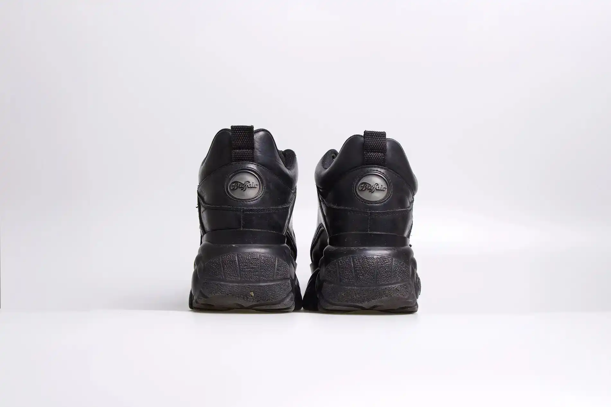
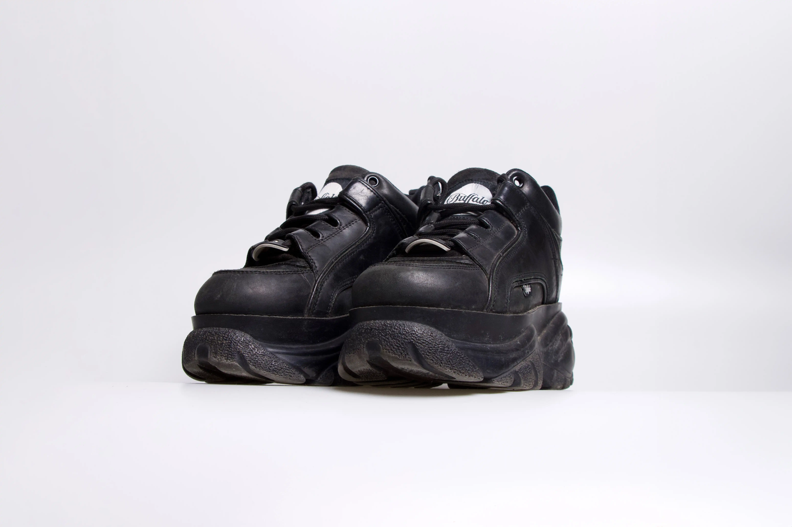
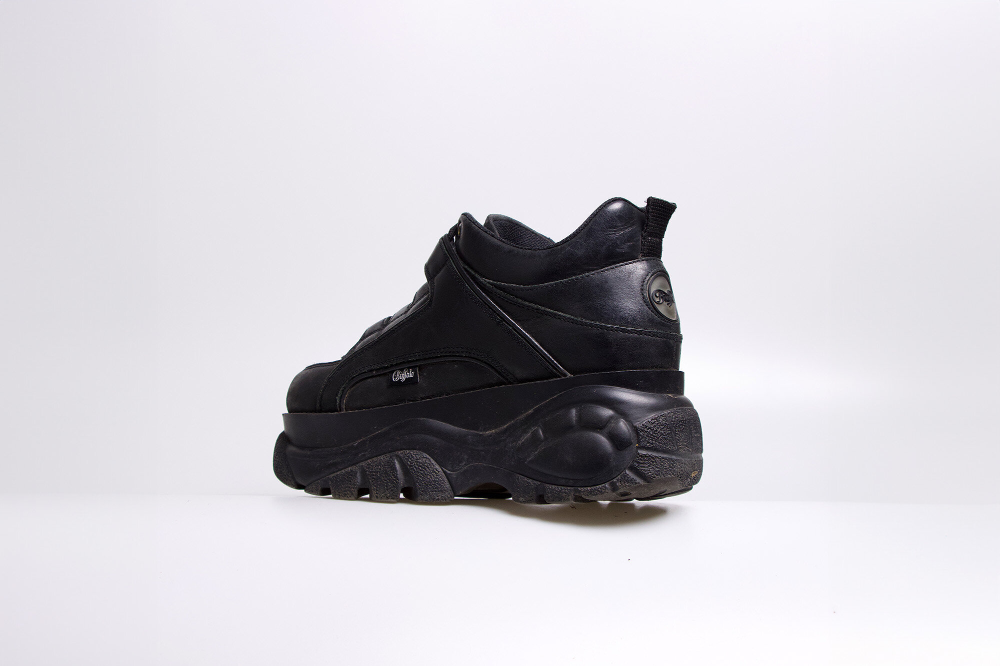
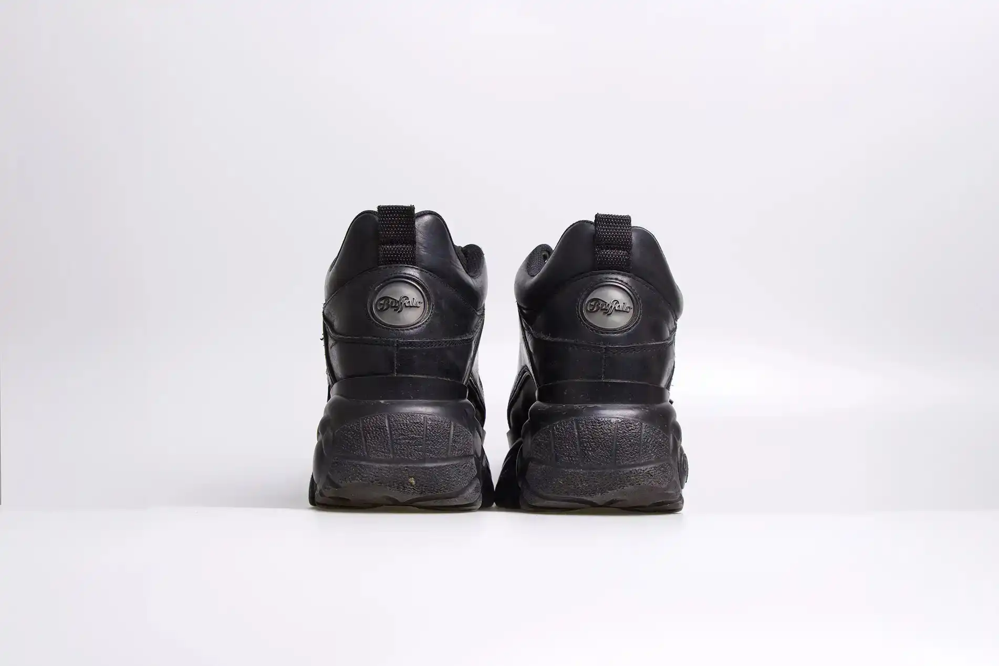
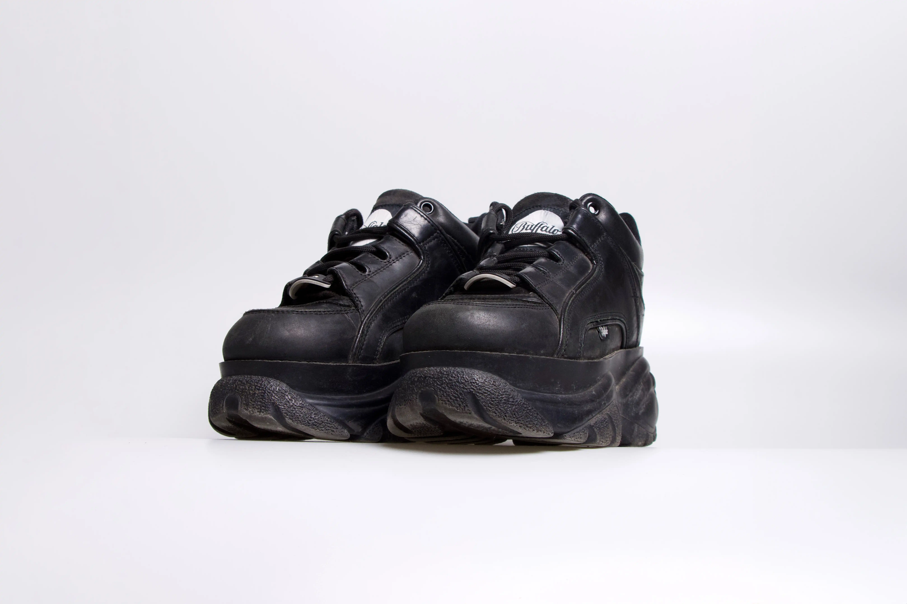
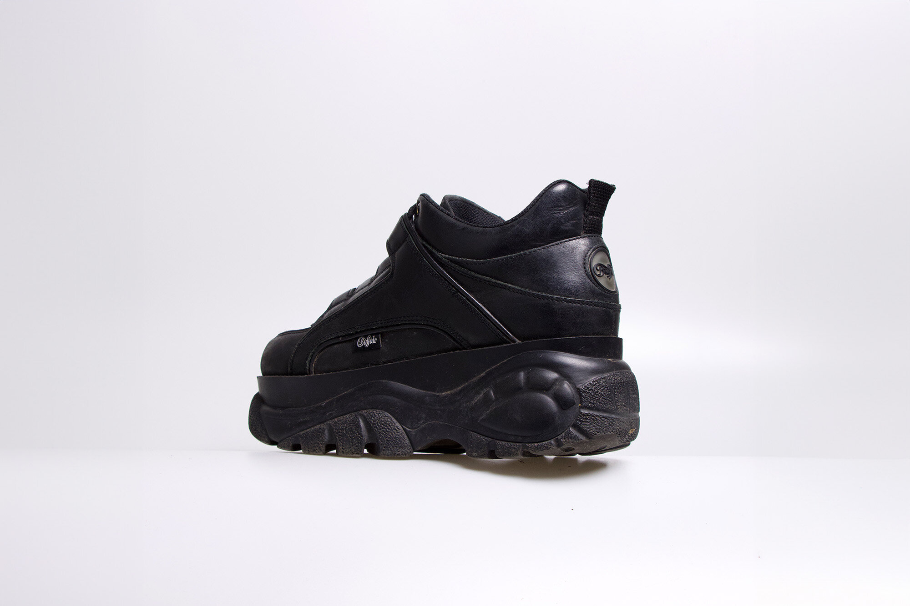

Portfolio
you can have a glance at some of my best projects here:
Botanischer Garten
Rebranding
Online Shop
Photography
TYPO Festival
Animation
Wild!
CI + Animation
Bafeya x Samu
Sticker Design
Poetry Slam
Mobile Event Website

Fitness Studio Silver May
Website Design for Web and Mobile
Ätzend
band teaser
Mission 11
Animation
Schl8hof Juniors
Poster Design

Zing. Apfelsaft
Packaging Design

Zephyr
Logo Design + CI
 




